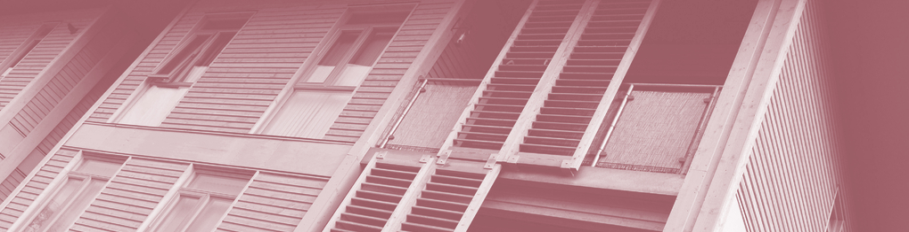

Stirchley Co-operative Development
Developing and growing co-operation in Stirchley
About us

Stirchley Co-operative Development is a group of housing and worker co-operatives based in Stirchley and nearby: Birmingham Bike Foundry, Federici Housing Co-operative, Gung Ho Housing Co-operative, and some others. We have been building a co-operative movement in and around Stirchley for the past decade and now we are coming together to create something bigger.
We plan to build affordable and eco-friendly residential and retail premises in the heart of Stirchley, with the aim of giving people back control over their home and work environments.
What is a Co-operative?

According to the International Co-operative Alliance, a co-operative is an autonomous association of persons united voluntarily to meet their common economic, social, and cultural needs and aspirations through a jointly-owned and democratically controlled enterprise.
Cooperatives are based on the values of self-help, self-responsibility, democracy, equality, equity and solidarity. In the tradition of their founders, cooperative members believe in the ethical values of honesty, openness, social responsibility and caring for others. Co-operatives also follow the seven Co-operative Principles.
As we are a co-operative, each one of our tenants will have an equal say in the running of the building in which they live or work. We are a non-profit organisation, so any profits will be reinvested as the members see fit. We wish to support and grow other co-operatives in the community by providing them with secure and affordable premises.
What's happening in Stirchley?

For nearly 30 years there's been unused land for development in Stirchley, while there's more need than ever for affordable housing which our councils are struggling to provide. We want to offer something positive to the community we love - our plans would create affordable, energy efficient housing and high quality, eco-friendly shop units.
By building co-operative housing and retail space we are building on the rich co-operative history of our local area, using the legacy of the past to forge a better future for Stirchley.
"Stirchley deserves better!"- Steve McCabe, MP for Selly Oak
What are our plans?
For the last two years Stirchley Co-operative Development has been working a plan to do something amazing in our neighbourhood. In collaboration with Accord, a housing association with a great track record of building cost-conscious ecological co-operative housing, we want to develop a mixed-use residential and retail development around Stirchley High Street on the A441 Pershore Road.
We will create retail space for local worker co-ops, co-operative housing, an events space and maybe even childcare, all at a price which is realistic for its current and future members. The end result will be a long-term asset, regenerating an area we care about in a way that is sensitive to the past and ambitious about our common future.
We are not currently looking for members during this development phase. However, as soon as construction begins we will be opening applications for people to join and make their home here. We will finance this project using a variety of sources, including a community share issue in order to allow people to invest in the project and have a say in how it's run.
Stirchley Co-operative Development is incorporated as a business using the Somerset Rules for Co-operative Societies.
Stirchley Co-operative Development Ltd. is company number RS004496.
As a company registered under the Co-operative and Community Benefit Societies Act 2014, the co-op is regulated by the Financial Conduct Authority (FCA).
Email address for inquiries: info@stirchley.coop